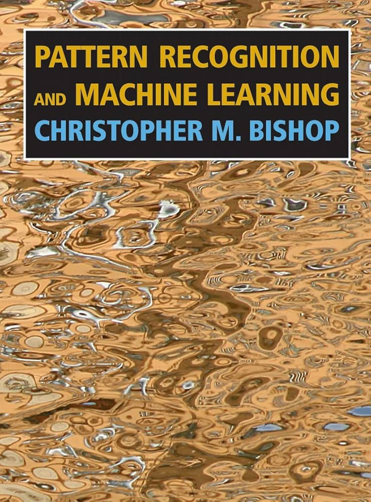
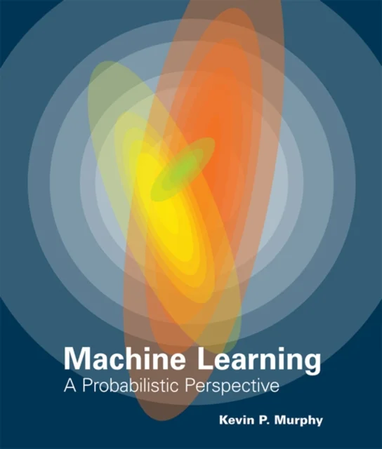

DAT158: Machine Learning Engineering and Advanced Algorithms
Module 1 - Introduction to Machine Learning
Practical information
- The ML part consists of 3 modules:
- Introduction to ML
- Machine learning models
- End-to-end ML project
- Lab: Work (and get help) with exercises
- Bergen: Wednesdays 12.15, E403 & E443
- Førde / Haugesund: Mondays 12.15 / 13.15
- Mandatory assignments:
- Multiple choice test after module 1
- Project work after module 3 (but feel free to start early!)

- General info:
- Announcements on Canvas
- Discord
Programming
The machine learning part of the course is based on the python programming language
Free resources for learning python are posted on Canvas, such as
Two options for running python:
- Use cloud services, such as
- Install locally

Notebooks
Exercises are given in form of Jupyter notebooks
- Can mix code, results, and notes (
markdownandTeX) in the same file - These are partially filled, and you fill the rest
- Can be run locally or in cloud services


git clone git@github.com:HVL-ML/DAT158.git

Python libraries

numpy provides fast manipulation of large arrays and matrices

scikit-learn has a big selection of machine learning models and functions for data processing and evaluation
numpy arrays
Operations on arrays are typically done element-by-element.
>>> a = np.array([1,2,3])
>>> np.power(a, 2)
array([1, 4, 9])>>> b = np.array([4,5,6])
>>> a * b
array([ 4, 10, 18])In cases the shapes of two arrays don’t match, numpy will try to make them match
(aka broadcasting):

Machine learning

Different types of machine learning
Supervised learning:
Each datapoint is assigned to a label, which the model tries to predict.
Unsupervised learning:
Datapoints are unlabelled, but the model tries to group similar ones, or otherwise learn a pattern.
Reinforcement learning:
The model (aka agent) interacts with an environment, and receives rewards or penalties depending on its actions


(Some) types of data


Sources of data
Openly available datasets well suited for machine learning:
(More listed in Chap 2 in the textbook)


Data challenges
- Too little data available:
Can lead to overfitting: the model gives perfect predictions on known data, but does not generalise to new data
- Unrepresentative data:
New data does not look like known data


- Poor quality:
Noise, typing errors, missing entries, rounding errors, …

- Irrelevant data:
Little or no correlation with the observable we want to predict
Machine learning engineering
theoretical
applied
Machine learning models
 
Machine learning engineering
Data and society